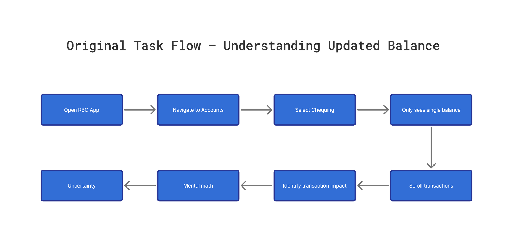
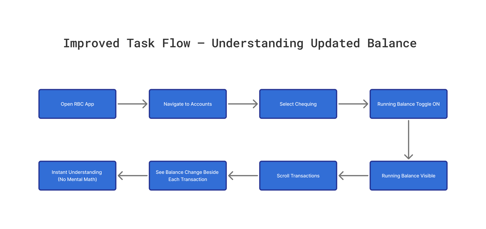
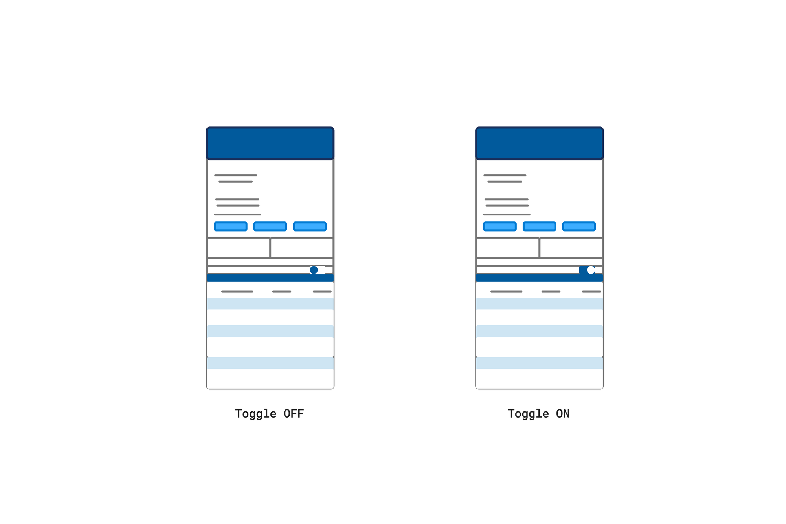
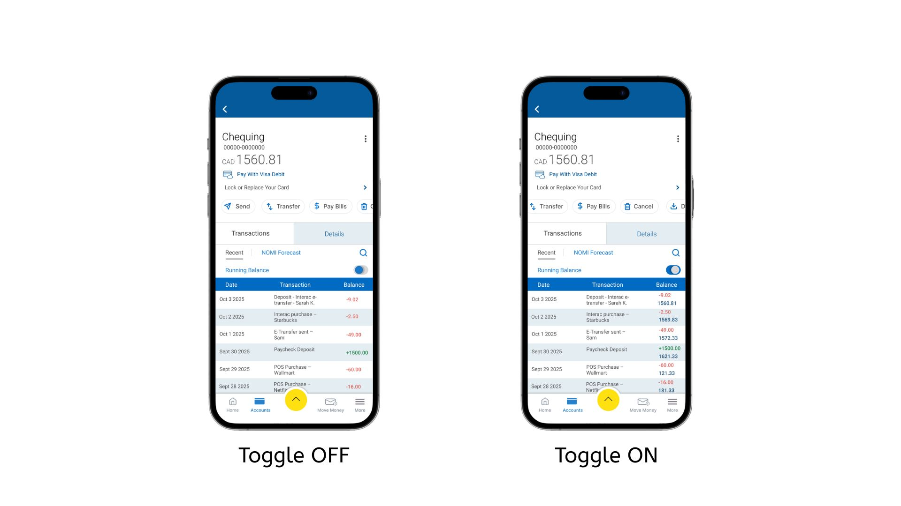
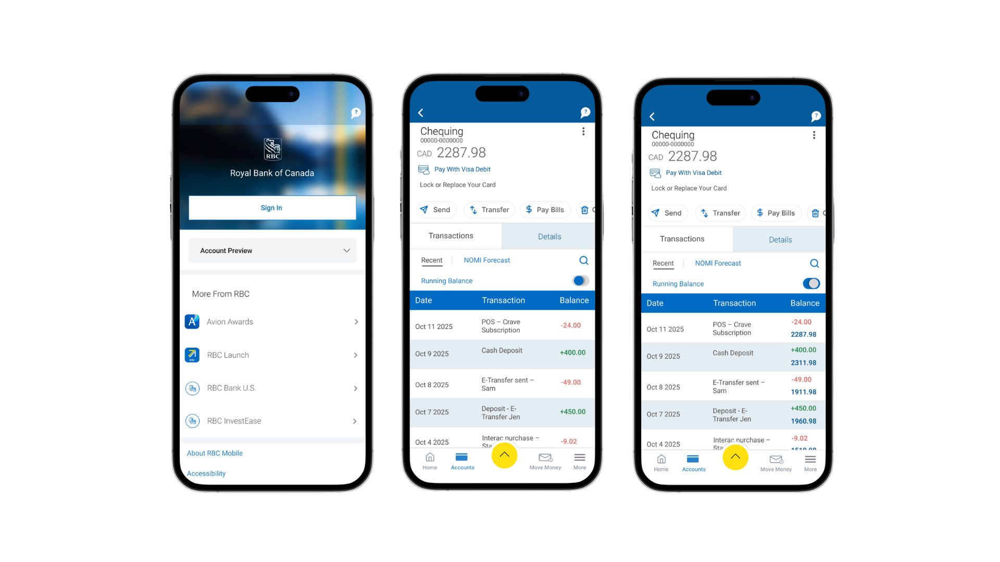

UX / UI · Product Design
A usability-driven redesign of the RBC Mobile app's Running Balance feature
My Role
UX/UI Product Designer (Academic Case Study)
Tools
Figma, Figjam, Notion, Google Workspace
Deliverables
Heuristic Evaluation, Design Analysis, Low-Fidelity Wireframes, High-Fidelity Prototype, Usability Test Plan & Report
Overview
This project is a university case study completed as part of my academic work.
RBC Mobile is one of Canada's most widely used banking apps.
Users rely on the Transactions page to understand how their balance changes, but the original design presents only one static balance at the top.
01 — Empathize
For this case study, I focused on everyday mobile banking users between the ages of 18 and 60.
Most of these users rely on the Transactions page to confirm purchases.
No visibility into balance changes
High cognitive effort
Difficulty verifying account activity
Misalignment with real-world expectations
Higher risk of errors
Gabriel, 29
Everyday Spender
Gabriel is a young professional who uses mobile banking several times a week.

Across user research, heuristic evaluation, and analysis of the original task flow, a clear pattern emerged.
02 — Define
Problem Statement restated with focus on solution.
03 — Ideate



04 — Test

The study followed a formative, moderated testing method.
Sessions were run in a quiet space over Zoom.
Each test lasted around 15–20 minutes.
Users easily found the Running Balance toggle
The taller transaction list and larger typography improved readability
The color coding helped users quickly interpret financial changes
Participants liked having the option to switch between simple and detailed views
The V2 design was consistently preferred
Overall, V2 felt clearer, more logical, and more similar to real banking app behavior
Conclusion
This project focused on improving the clarity and usability of the Running Balance feature. The final design reduces cognitive load, improves readability.